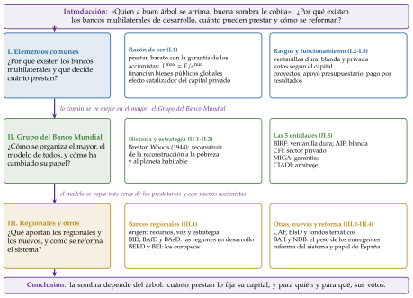
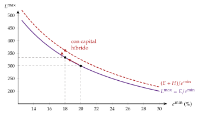
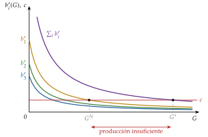
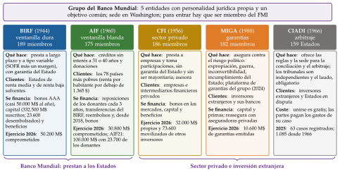
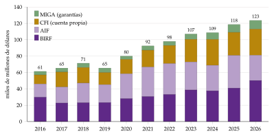
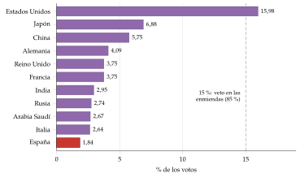
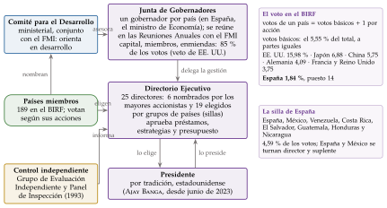
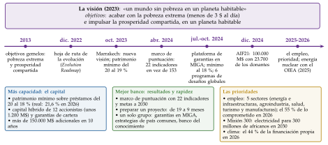
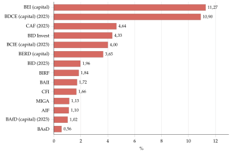

Tema 3.B.30
El Grupo del Banco Mundial, los Bancos Regionales de Desarrollo y otras instituciones financieras multilaterales de desarrollo.
Por qué existen los bancos de desarrollo: capital, bienes públicos globales y efecto catalizador. Grupo Banco Mundial, AIF, bancos regionales, AIIB y reforma.
Exclusivo Material exclusivo de victorgutierrezmarcos.es y la app Oposición TCEE · DCE. Puedes usarlo libremente para tu estudio personal. No se autoriza su incorporación a otras plataformas, aplicaciones o servicios. Condiciones de uso.
Introducción
Enganche:
«Quien a buen árbol se arrima, buena sombra le cobija», dice el refrán.
En 1944, con la guerra aún sin terminar, 44 países crearon en Bretton Woods un banco de propiedad pública para reconstruir y desarrollar el mundo. El Plan Marshall lo resumió en un lema: «sople donde sople el viento, debemos movernos en la misma dirección» (whatever the weather, we only reach welfare together).
82 años después, en el ejercicio que terminó en junio de 2026, el Grupo del Banco Mundial comprometió 123.500 millones de dólares, el doble que 10 años antes, con un capital que apenas ha cambiado; y en octubre de 2026 los presidentes de los bancos multilaterales calcularon que sus reformas les permitirán prestar 792.000 millones más en una década sin pedir más capital a sus accionistas.
La pregunta que recorre la exposición es: ¿por qué hace falta un banco cuyos dueños son Estados para financiar el desarrollo, y cuánto puede prestar con la sombra de sus accionistas?
Relevancia:
Para los países en desarrollo: son la principal fuente de financiación a largo plazo y barata para los países que el mercado no financia, y los únicos que les prestan cuando los mercados se cierran; para los más pobres, la AIF es la mayor fuente de financiación en condiciones favorables [ver tema 3.B.29].
Para la economía mundial: son el instrumento con que el G-20 quiere financiar el clima, las pandemias y los Objetivos de Desarrollo Sostenible, y un terreno de disputa entre Estados Unidos, China y las economías emergentes [ver tema 3.B.19] [ver tema 3.B.31].
Para España y para el cuerpo: España es accionista de todos ellos; los técnicos comerciales y economistas del Estado la representan en sus directorios y desde el Tesoro, y las empresas españolas compiten por los contratos que licitan [ver tema 4.A.24] [ver tema 4.A.26].
Contextualización:
Las definiciones de partida:
una institución financiera multilateral de desarrollo es una institución formada por varios Estados que dedica toda o la mayor parte de su actividad a financiar el desarrollo de los países receptores; el Comité de Ayuda al Desarrollo de la OCDE las distingue de las agencias multilaterales que no prestan, como las de las Naciones Unidas;
dentro de ellas, los bancos multilaterales de desarrollo (BMD) son las que funcionan como bancos: se financian en los mercados con el respaldo de sus accionistas (I.1); los fondos multilaterales viven de las donaciones;
el FMI es una institución financiera multilateral, pero no de desarrollo [ver tema 3.B.22].
La historia:
el sistema de Bretton Woods (1944) se apoya en 3 pilares: el monetario-financiero, el FMI [ver tema 3.B.22]; el de la reconstrucción y el desarrollo, el Banco Internacional de Reconstrucción y Fomento (BIRF), hoy en el Grupo del Banco Mundial, y el comercial: la Organización Internacional del Comercio no llegó a nacer y quedó el GATT (1947), origen de la OMC (1995) [ver tema 3.B.20] [ver tema 3.B.33];
entre 1959 y 1966 nacen los bancos regionales de América, África y Asia; en 1991, el BERD, para la transición del Este, y a mediados de los 2010, los bancos impulsados por China y los BRICS.
Problemática:
¿Por qué existen los bancos multilaterales de desarrollo, cómo se financian y qué determina cuánto pueden prestar?
¿Cómo se organiza el Grupo del Banco Mundial y cómo ha cambiado su papel?
¿Qué aportan los bancos regionales y las nuevas instituciones, y cómo se está reformando el sistema?
Estructura:
La exposición va de lo común a lo particular: primero lo que comparten todos los bancos, después el mayor y el modelo de los demás, y por último los regionales y los nuevos.
I. Los bancos multilaterales de desarrollo: elementos comunes (I): razón de ser, rasgos, ventanillas, gobierno y actuaciones;
II. El Grupo del Banco Mundial (II): historia, estructura y estrategia, y sus 5 entidades;
III. Los bancos regionales y otras instituciones multilaterales (III): los bancos regionales (BID, BAfD, BAsD y los europeos, BERD y BEI), las instituciones subregionales y temáticas, las nuevas de las economías emergentes y la reforma del sistema, con el papel de España.
3.B.30. El Grupo del Banco Mundial, los Bancos Regionales de Desarrollo y otras instituciones financieras multilaterales de desarrollo
Introducción2′30″
I. Los bancos multilaterales de desarrollo: elementos comunes8′30″
1. Definición y razón de ser
2. Rasgos generales
3. Tipología de entidades
4. La estructura de gobernanza
5. Las actuaciones
II. El Grupo del Banco Mundial9′30″
1. Información general y evolución histórica
2. Estructura y estrategia
3. Instituciones que conforman el Grupo
III. Los bancos regionales y otras instituciones multilaterales8′
1. Los bancos regionales de desarrollo
2. Las instituciones subregionales y temáticas
3. Las nuevas instituciones de las economías emergentes
4. El sistema de los BMD: reforma y papel de España
Conclusión1′30″
Mapa de la exposición. Cada bloque responde a una pregunta y deja abierta la del siguiente; a la derecha, lo que se cuenta en sus subapartados.

Fuente: elaboración propia.
I. Los bancos multilaterales de desarrollo: elementos comunes
Empezamos por lo que comparten todos los bancos multilaterales de desarrollo: por qué existen, cómo se financian, qué entidades los forman, cómo se gobiernan y qué hacen.
Conclusión anticipada: un banco multilateral de desarrollo es un intermediario que presta a largo plazo y barato a países que el mercado no financia, o financia caro, gracias a la garantía de sus accionistas; cuánto puede prestar lo decide su capital, y para qué, sus votos.
I.1. Definición y razón de ser
La definición: un banco multilateral de desarrollo (BMD) es una institución financiera cuyos accionistas son Estados, que capta recursos en los mercados internacionales de capitales y de los países donantes y los presta, junto con conocimiento, a los países en desarrollo para promover su desarrollo económico y social y reducir la pobreza.
Su objetivo va más allá del crecimiento: el desarrollo es, en palabras de Amartya Sen, la expansión de las libertades reales de que disfrutan las personas.1
No se confunde con las agencias de las Naciones Unidas que no prestan (el PNUD, la UNCTAD), ni con el FMI, que es una institución financiera multilateral pero no de desarrollo: presta para reforzar reservas, no para financiar proyectos [ver tema 3.B.22].
La pregunta: si hay mercados internacionales de capitales, ¿por qué hacen falta bancos públicos internacionales? La teoría da 3 respuestas, de la más antigua a la más reciente:
corrigen los fallos del mercado de crédito a los países en desarrollo, prestando con la garantía de sus accionistas;
financian bienes públicos globales que ningún país pagaría solo;
atraen capital privado que sin ellos no llegaría (el efecto catalizador).
I.1.1. La intermediación con la garantía de los accionistas
a) Idea
El fallo: un país pobre no tiene acceso al crédito a largo plazo, o lo paga muy caro, porque no hay un tribunal que obligue a un Estado a pagar, porque el acreedor sabe poco del proyecto y porque no puede endeudarse fuera en su propia moneda [ver tema 3.B.29].
La respuesta: un banco cuyos dueños son los Estados ricos y pobres a la vez toma prestado en los mercados con la máxima calificación, gracias al capital que respaldan los accionistas, y presta a largo plazo a esos países a un tipo cercano al suyo. El país pobre se arrima al balance de los ricos; es el árbol del refrán.
b) Modelo
i) Supuestos
El balance: el banco tiene un patrimonio \(E\) (el capital desembolsado más las reservas acumuladas) y concede préstamos \(L\), que financia con el patrimonio y con deuda \(B\): \(L=E+B\). Se usa la notación del propio Banco Mundial, que habla de la ratio entre patrimonio y préstamos (equity-to-loans).
El capital exigible (callable capital) es la parte del capital suscrito que los accionistas no desembolsan, pero se comprometen a pagar si el banco no puede atender su deuda; es una garantía, no un recurso para prestar.
Los tipos: el banco se endeuda al tipo \(r_B\), el de un emisor con calificación AAA, y presta a \(r_L=r_B+m\), con un margen \(m\) que cubre sus costes, \(c\) por unidad prestada. El mismo país, en el mercado, pagaría \(r^*+\rho\), con una prima de riesgo \(\rho\) que puede ser prohibitiva.
La restricción: para conservar la calificación AAA, que es lo que abarata su deuda, el banco mantiene un patrimonio mínimo por unidad prestada, \(e^{\min}\), que vigilan su propio consejo y las agencias de calificación.
ii) Desarrollo
Paso 1: la restricción de capital.
El patrimonio sobre los préstamos no puede bajar del mínimo, \(E/L\geq e^{\min}\), de modo que lo máximo que el banco puede prestar es su patrimonio multiplicado por la inversa de esa ratio, la palanca del capital:
\[L^{\max}=\frac{E}{e^{\min}}\tag{1}\]
Paso 2: la ventaja para el prestatario.
Cada unidad prestada le ahorra al país la diferencia entre lo que pagaría en el mercado y lo que paga al banco, \((r^*+\rho)-(r_B+m)\): la prima de riesgo desaparece y queda un margen pequeño.
Paso 3: cómo crece el banco.
El beneficio es lo que cobra menos lo que paga y lo que gasta: \(r_L\,L-r_B\,B-c\,L=r_B\,E+(m-c)\,L\).
Si el banco presta todo lo que puede y no reparte dividendos, el beneficio se queda como reservas y el patrimonio crece a la tasa \(g_E=r_B+(m-c)/e^{\min}\); los préstamos crecen a esa misma tasa, porque \(L^{\max}\) es proporcional a \(E\).
iii) Implicaciones
El efecto multiplicador del capital: cada dólar de patrimonio sostiene \(1/e^{\min}\) dólares de préstamos; con un mínimo del 20 %, 5 dólares, y con uno del 18 %, 5,6 (gráfico 1). Por eso, para los accionistas, un banco de desarrollo es una forma muy barata de financiar el desarrollo: aportan poco capital y garantizan el resto.
3 palancas para prestar más: más patrimonio (aumentos de capital desembolsado o beneficios retenidos), un mínimo \(e^{\min}\) más bajo (más riesgo con el mismo patrimonio) o un margen mayor (préstamos más caros, que van contra el propio fin del banco).
Un dilema: prestar más con el mismo capital pone en riesgo la calificación AAA, y con ella el bajo coste de la deuda, que es lo que el banco traslada a sus prestatarios.
El acreedor preferente: los países pagan antes al banco que a los demás acreedores, incluso en un impago; por eso sus pérdidas son pequeñas y la palanca puede ser grande.

c) Extensiones: la revisión del marco de adecuación del capital
El encargo: en 2022, el G-20 encargó a un grupo independiente revisar los marcos de adecuación del capital (capital adequacy frameworks, CAF) de los BMD, para que prestaran más con el capital que ya tienen.
Sus recomendaciones, que son las palancas de (1):
fijar el apetito de riesgo con más margen: bajar \(e^{\min}\) hasta donde lo permita la calificación;
reconocer el valor del capital exigible, que las agencias apenas cuentan;
el capital híbrido: instrumentos subordinados y perpetuos que las agencias cuentan como patrimonio, de modo que suben \(E\) sin que los accionistas desembolsen capital ordinario;
transferir riesgo con garantías de cartera y seguros, que liberan capital;
mejorar la relación con las agencias de calificación y la transparencia de los datos de impagos.
Su aplicación: el BIRF bajó su mínimo del 20 al 19 % en 2023 y al 18 % en 2024, y 12 accionistas le han aportado unos 1.200 millones de dólares de capital híbrido (II.1); el Banco Africano de Desarrollo emitió en 2024 el primer capital híbrido en el mercado, y desde ese año el FMI permite a sus miembros comprarlo con derechos especiales de giro. En conjunto, los presidentes de los BMD calculan que las medidas adoptadas desde 2023 les permitirán prestar unos 792.000 millones de dólares más en la próxima década.
d) Evidencia empírica
Las pérdidas: entre 1985 y 2014, la tasa de impago de los préstamos soberanos de los BMD fue una pequeña fracción de la de los préstamos de bancos privados a los mismos países, gracias al trato de acreedor preferente.
Las calificaciones: los grandes BMD tienen la máxima calificación aunque la mayoría de sus prestatarios no la tienen; las agencias miran sobre todo el patrimonio desembolsado y dan poco valor al capital exigible y a la condición de acreedor preferente, lo que limita la palanca.
e) Valoración
Lo que explica: por qué los BMD pueden prestar barato y a largo plazo, y por qué la discusión sobre cuánto pueden prestar es una discusión sobre su capital.
Sus límites:
el banco presta en dólares o en euros, y el riesgo de cambio sigue en el país (el pecado original) [ver tema 3.B.17];
el modelo explica los préstamos a un país, que los devuelve; no explica por qué financiar lo que beneficia a muchos países a la vez y no devuelve ninguno: los bienes públicos globales.
I.1.2. Los bienes públicos globales
a) Idea
El problema: hay bienes cuyos beneficios no conocen fronteras: un clima estable, la vigilancia de las pandemias, la estabilidad financiera, la investigación agrícola. Son bienes públicos globales: no rivales y no excluibles entre países.
La respuesta: cada país los produce de menos, porque disfruta de lo que hacen los demás; una institución multilateral puede reunir las aportaciones y acercarse a la cantidad óptima.
b) Modelo
i) Supuestos
Los países: hay \(N\) países, y cada uno aporta \(g_i\) a un bien público global \(G=\sum_{i=1}^N g_i\) (toneladas de emisiones evitadas, dosis de vacuna).
Beneficios y costes: cada país obtiene un beneficio \(b_i(G)\), creciente y cóncavo, y cada unidad aportada le cuesta \(c\), constante; su bienestar es \(b_i(G)-c\,g_i\).
ii) Desarrollo
Paso 1: lo que hace cada país solo (equilibrio de Nash).
Cada país aporta hasta que su propio beneficio marginal iguala el coste, \(b_i'(G^N)=c\), tomando como dadas las aportaciones de los demás: solo aporta el que más valora el bien, y el resto se aprovecha (el polizón, free rider) [ver tema 3.A.23].
Paso 2: lo que conviene al mundo (óptimo).
Como cada unidad beneficia a todos a la vez, el óptimo suma los beneficios marginales de todos los países, la condición de Samuelson:2
\[\sum_{i=1}^{N} b_i'(G^*)=c\tag{2}\]
Paso 3: la brecha (gráfico 2).
Como \(\sum_i b_i'>b_i'\), la cantidad óptima es mayor que la de equilibrio, \(G^*>G^N\), y la brecha crece con el número de países que se benefician.

iii) Implicaciones
Un papel para los BMD: un banco multilateral puede reunir aportaciones y dar incentivos (donaciones o préstamos más baratos a quien produce el bien) que acercan \(G^N\) a \(G^*\), sin depender de que cada país lo haga solo.
Pero hay que pagarlo: un país pobre no debe endeudarse para producir un bien que disfrutan los ricos; por eso los bienes públicos globales se financian con donaciones y fondos especiales, no con los préstamos del modelo anterior.
c) Extensiones: cómo se agregan las aportaciones
La tecnología de agregación cambia el problema:
en la suma (el clima), cuenta lo que aporta cada uno;
en el eslabón más débil (una pandemia), cuenta el país que menos hace, y conviene financiar al más pobre;
en el mejor disparo (una vacuna), cuenta el mejor esfuerzo, y conviene concentrar los recursos.
d) Evidencia empírica
La financiación climática de los BMD a los países de renta baja y media fue de 102.600 millones de dólares en 2025, un 21 % más que un año antes, de los que 35.000 para la adaptación.
e) Valoración
La tensión con la pobreza: cada dólar que se dedica a un bien global deja de ir a los países más pobres, y los accionistas discuten si los BMD deben ocuparse de ello (Estados Unidos criticó en 2025 la «deriva del mandato»).
Lo que no explica: cómo atraer al capital privado, que tiene mucho más dinero que los propios bancos; esa es la tercera razón de ser.
I.1.3. El efecto catalizador
a) Idea
La pregunta de Rodrik (1995): con los mercados de capitales abiertos, ¿por qué prestan aún los BMD? Su respuesta es la información: el banco estudia y vigila los proyectos y las políticas mejor que un inversor privado, y su participación es una señal que atrae al capital privado.
La meta: en 2015, los BMD y el FMI propusieron pasar «de miles de millones a billones» (from billions to trillions): usar sus recursos para movilizar financiación privada mucho mayor.
b) Modelo
i) Supuestos
Los proyectos: cada uno necesita 1 unidad de financiación y devuelve \(R\) si sale bien y nada si sale mal. Los hay buenos, que salen bien con probabilidad \(p_A\), y malos, con \(p_B<p_A\); una proporción \(\lambda\) son buenos.
Los inversores privados: neutrales al riesgo, con un coste de oportunidad \(1+r^*\), y sin forma de distinguir un proyecto bueno de uno malo.
El banco: puede examinar cada proyecto, con un coste \(k\) por proyecto, y saber de qué tipo es.
ii) Desarrollo
Paso 1: sin el banco, el inversor solo conoce la probabilidad media de éxito, \(\bar p=\lambda\,p_A+(1-\lambda)\,p_B\), y presta si lo que espera cobrar cubre su coste: \(\bar p\,R\geq1+r^*\).
Paso 2: el mercado se cierra aunque los buenos proyectos sean rentables si
\[p_A\,R\;\geq\;1+r^*\;>\;\bar p\,R\tag{3}\]
Es la selección adversa de George Akerlof y el racionamiento del crédito de Joseph Stiglitz y Andrew Weiss [ver tema 3.A.13].3
Paso 3: con el banco, que examina y cofinancia solo los buenos proyectos, su participación revela el tipo: los inversores prestan a los buenos al tipo que corresponde a \(p_A\), y el banco aporta solo una parte. Compensa si lo que se gana con los buenos proyectos que ahora se financian supera el coste de examinarlos.
iii) Implicaciones
El efecto catalizador: con poco dinero propio, el banco moviliza mucho dinero privado, porque lo que aporta es información y credibilidad, no solo recursos. La medida es la ratio de movilización, la financiación privada atraída por cada dólar del banco.
La adicionalidad: el banco solo añade valor donde el mercado no llegaría solo; financiar proyectos que el mercado ya financia desplaza al capital privado.
La condicionalidad es parte de la información: el préstamo va con compromisos de política que el banco vigila, algo que un acreedor privado no puede hacer.
c) Extensiones
El halo del acreedor preferente: un Gobierno se lo piensa más antes de expropiar un proyecto en el que está un BMD; por eso las garantías contra el riesgo político (II.3.4) atraen inversión directa.
La versión macroeconómica: el préstamo del FMI a un país en crisis puede tener el mismo efecto catalítico sobre los acreedores privados [ver tema 3.B.22].
d) Evidencia empírica
De miles de millones a billones no se cumplió: en 2024, los BMD y otras instituciones de desarrollo movilizaron 108.700 millones de dólares de financiación privada en los países de renta baja y media, cuando harían falta billones; por cada dólar que prestan los BMD llegan unos 0,6 dólares privados, y en los países de renta baja, todavía menos.
e) Valoración
Lo bueno: explica por qué el valor de un BMD no se mide solo por lo que presta, y por qué el Banco Mundial tiene entidades para el sector privado y para las garantías.
Lo difícil: la adicionalidad es casi imposible de medir, y la cultura de aprobar préstamos puede pesar más que la calidad: en 1992, el informe Wapenhans encontró que más de un tercio de los proyectos del Banco Mundial terminados ese año eran insatisfactorios.
En resumen, las 3 razones de ser se complementan: el banco presta barato gracias a sus accionistas, financia lo que nadie pagaría solo y atrae a quien no vendría solo. Pasamos ahora a cómo lo hace en la práctica.
I.2. Rasgos generales
Las diferencias con un banco comercial:
sus accionistas son Estados y no buscan beneficio: el beneficio se queda como reservas o se transfiere a sus fondos de donaciones;
sus acciones no se negocian en ningún mercado y solo pueden pasar de un Estado a otro con el acuerdo de los órganos de gobierno;
no captan depósitos ni tienen un supervisor bancario: se rigen por su convenio constitutivo, que es un tratado internacional, y por las políticas que aprueban sus órganos.
Las fuentes de sus recursos:
el capital: el suscrito se divide en una parte desembolsada, pequeña, y otra exigible, que solo se pide si el banco no puede pagar su deuda (I.1.1);
la deuda que emiten en los mercados internacionales: los BMD son de los mayores emisores de bonos del mundo y de los más innovadores (el primer swap de divisas conocido, en 1981, fue entre el Banco Mundial e IBM);
las contribuciones de los donantes a sus fondos de donaciones y préstamos muy favorables (las ventanillas blandas), que se reponen cada 3 o 4 años, y a los fondos fiduciarios, que administran en nombre de un donante;
los beneficios retenidos, que suman reservas.
Sus préstamos:
en condiciones de mercado, o no concesionales, para los países que pueden pagar, al tipo al que se endeuda el banco más un margen;
concesionales, con tipos casi nulos, plazos de hasta 40 años y periodos de gracia largos, o donaciones, para los más pobres; se mide con el elemento de donación [ver tema 3.B.29].
Sus reglas de prudencia:
un límite a los préstamos ligado al patrimonio (I.1.1), que obliga a pedir aumentos de capital para crecer;
el casamiento de plazos y de tipos: los préstamos se dan a tipo variable, ligado a lo que le cuesta endeudarse al banco, y con plazos parecidos a los de su deuda;
el tratamiento de los atrasos: un país con pagos atrasados más allá de un plazo no recibe préstamos nuevos hasta que se pone al día.
| Activo | Pasivo y patrimonio |
|---|---|
| Préstamos a Estados (y a empresas) | Bonos emitidos en los mercados internacionales |
| Activos líquidos (bonos de alta calidad) | Patrimonio: capital desembolsado y reservas |
| Participaciones en empresas (las ventanillas privadas) | Fuera de balance: capital exigible (garantía) |
Fuente: Elaboración propia a partir de Banco Mundial (2026e).
I.3. Tipología de entidades
Un BMD suele ser un grupo de entidades con personalidad jurídica propia y un objetivo común, que se distinguen por el servicio que prestan: las ventanillas.
| Ventanilla | A quién y cómo | Se financia con | Ejemplos |
|---|---|---|---|
| Dura (no concesional) | Estados de renta media, a tipos de mercado | Bonos y capital | BIRF, BID, BAsD, BAfD |
| Blanda (concesional) | Estados de renta baja, con préstamos muy favorables y donaciones | Reposiciones de los donantes (y bonos, en la AIF) | AIF, Fondo Africano de Desarrollo, Fondo Asiático de Desarrollo |
| Privada | Empresas e intermediarios financieros, sin garantía del Estado | Bonos y capital | CFI, BID Invest, BERD |
| Garantías | Inversores extranjeros, contra el riesgo político | Capital y primas | MIGA |
Fuente: Elaboración propia a partir de los convenios constitutivos y los informes anuales de cada banco.
La graduación: un país que pasa de la ventanilla blanda a la dura se gradúa; si vuelve atrás, hay graduación inversa. Los países que reúnen requisitos de las 2 (pobres pero solventes) reciben una mezcla (blend countries).
La sostenibilidad de cada ventanilla: la dura y la privada se financian solas con su margen; la blanda, que regala parte de lo que da, necesita que los donantes la repongan cada 3 o 4 años, y en esas negociaciones fijan sus prioridades.
I.4. La estructura de gobernanza
Los 3 niveles, casi iguales en todos los bancos:
la Junta de Gobernadores, el órgano supremo: un gobernador y un suplente por país, normalmente el ministro de Economía o de Finanzas; se reúne una vez al año y decide lo más importante (aumentos de capital, nuevos miembros, reformas del convenio);
el Directorio Ejecutivo, que lleva la gestión diaria: aprueba préstamos, estrategias y políticas; sus directores representan a un país o a un grupo de países (una silla);
el presidente, elegido por el Directorio o la Junta, que dirige al personal.
Los votos: cada país tiene unos votos básicos, iguales para todos, y un voto más por cada acción suscrita. Así se combinan la igualdad entre Estados y el peso del capital: \[\tag{4} \text{votos}_i=\text{votos básicos}+\text{acciones suscritas}_i\]
Las estrategias, en 3 niveles: la corporativa, con los objetivos a largo plazo del banco; las sectoriales (energía, agua, educación…), y las de país, a medio plazo, que se acuerdan con cada Gobierno a partir de un diagnóstico de sus necesidades.
El equilibrio entre prestatarios y no prestatarios: en los bancos regionales, los países de la región conservan la mayoría del capital (III.1.1); en el Banco Mundial, las reformas de 2010 dieron más votos a los países en desarrollo (II.2).
I.5. Las actuaciones
La financiación, con 3 grandes instrumentos:
la financiación de proyectos de inversión (carreteras, redes eléctricas, escuelas), sobre todo de infraestructuras, que exigen mucho capital, duran décadas y tienen un gran efecto sobre el desarrollo;
el apoyo presupuestario ligado a reformas (en el Banco Mundial, la financiación para políticas de desarrollo), que se desembolsa cuando el Gobierno cumple las medidas acordadas;
los programas por resultados, que pagan cuando se alcanzan resultados medidos, no cuando se gasta.
El ciclo del proyecto, en 4 fases:
identificación y evaluación del proyecto;
licitación y adjudicación de los contratos, abierta a las empresas de los países miembros (III.4);
ejecución y supervisión;
evaluación de lo conseguido, por una oficina de evaluación independiente.
Las salvaguardias: normas ambientales y sociales que el proyecto tiene que cumplir (reasentamientos, pueblos indígenas, biodiversidad). Encarecen y alargan los proyectos, y por eso algunos países prefieren otros financiadores, pero evitan daños que antes se ignoraban; desde 2018, el Banco Mundial aplica su Marco Ambiental y Social.
La asistencia técnica y el asesoramiento: transmitir técnicas y conocimientos y dialogar con las autoridades sobre la política económica, para lo que el banco necesita oficinas en el país.
El conocimiento: los BMD tienen departamentos de investigación y estadística que estudian el desarrollo y publican sus datos (el Informe sobre el desarrollo mundial, las estadísticas de deuda externa).
La orientación a resultados:
desde la Declaración de París sobre la eficacia de la ayuda (2005), con sus 5 principios (apropiación, alineación, armonización, gestión orientada a resultados y mutua responsabilidad), y la Alianza de Busan (2011), los BMD miden lo que consiguen con marcos de resultados, y no solo lo que prestan;
la oficina de evaluación responde al Directorio y no a la gerencia, y los afectados por un proyecto pueden reclamar ante un mecanismo independiente (en el Banco Mundial, el Panel de Inspección, de 1993);
cada vez más, los bancos evalúan sus programas con grupos de control aleatorios, el método experimental de Abhijit Banerjee, Esther Duflo y Michael Kremer [ver tema 3.B.28].4
Recapitulación: los BMD existen porque prestan barato con la garantía de sus accionistas, financian bienes que nadie paga solo y atraen capital privado; lo que pueden prestar lo fija su capital, y lo que prestan, sus votos. Un BMD es, a la vez, un banco, un fondo de donantes y una agencia de conocimiento.
El modelo de todos ellos es el más antiguo y el mayor: pasamos al Grupo del Banco Mundial.
II. El Grupo del Banco Mundial
Una vez vistos los elementos comunes, pasamos al mayor y más antiguo de los BMD, el modelo de todos los demás.
Conclusión anticipada: el Grupo del Banco Mundial ha pasado de reconstruir Europa a luchar contra la pobreza y, desde 2023, a hacerlo «en un planeta habitable»; 5 entidades se reparten la ventanilla dura, la blanda, la privada, las garantías y el arbitraje, y su reforma reciente ha consistido en prestar más con el mismo capital.
II.1. Información general y evolución histórica
Qué es: el Grupo del Banco Mundial (GBM) reúne 5 entidades con un objetivo común (figura 2); el Banco Mundial en sentido estricto son solo las 2 que prestan a los Estados, el BIRF y la AIF. Tiene su sede en Washington y para entrar en él hay que ser antes miembro del FMI.

Fuente: elaboración propia a partir de Banco Mundial (2026g), Grupo Banco Mundial (2026), Asociación Internacional de Fomento (2026a) y CIADI (2026c). Miembros a 30 de junio de 2026; en el CIADI, Estados contratantes a 16 de agosto de 2026; compromisos del ejercicio 2026 (de julio de 2025 a junio de 2026).
La evolución, por décadas, sigue a la de las ideas sobre el desarrollo [ver tema 3.B.28]:
Los 40 y 50, de la reconstrucción al desarrollo: nace en Bretton Woods (1944) como el pilar de la reconstrucción y el desarrollo, junto al FMI y a la fallida Organización Internacional del Comercio [ver tema 3.B.20]. Su primer préstamo fueron 250 millones de dólares a Francia en 1947, pero el Plan Marshall se encargó de reconstruir Europa y el banco pasó a los países en desarrollo, con proyectos de infraestructuras prudentes que le dieron la máxima calificación en 1959.
1960, la ventanilla blanda: la AIF nace, a propuesta de Estados Unidos, para prestar en condiciones de favor a los países más pobres, que no podían pagar los préstamos del BIRF.
Los 70, la pobreza: con Robert McNamara (1968-1981), los préstamos se multiplicaron y pasaron de las infraestructuras a la agricultura, la educación y la salud, tras el informe Pearson (1969), que pidió más ayuda y mejor organizada.
Los 80, el ajuste estructural: con la crisis de la deuda el banco empezó a prestar a cambio de reformas (liberalización, privatización, disciplina fiscal), lo que John Williamson resumió en 1989 como el Consenso de Washington [ver tema 3.B.28]; funcionó mejor en Asia que en África, donde se descuidó a los más pobres.
Los 90, instituciones y salvaguardias: el informe Wapenhans (1992) denunció la cultura de aprobar préstamos sin cuidar sus resultados; llegaron el Panel de Inspección (1993) y las salvaguardias y, con James Wolfensohn (1995-2005), la lucha contra la corrupción y la Iniciativa para los países pobres muy endeudados (PPME, 1996) [ver tema 3.B.29].
Los 2000, los Objetivos de Desarrollo del Milenio, y la Iniciativa para el Alivio de la Deuda Multilateral (2005), con la que la AIF, el FMI y el Fondo Africano de Desarrollo condonaron la deuda de los países que culminaban la PPME.
Los 2010, voz, capital y objetivos: tras la crisis de 2008 el banco prestó de forma anticíclica y en 2010 aprobó un aumento de capital y más votos para los países en desarrollo; en 2013 fijó 2 objetivos, acabar con la pobreza extrema y promover la prosperidad compartida, y en 2018 aprobó otro aumento de capital (II.2).
Los 2020, la hoja de ruta de la evolución (Evolution Roadmap): tras la pandemia, y empujado por el G-20, el grupo se ha reformado para prestar más y ocuparse de los retos globales:
una nueva visión (Marrakech, 2023): «un mundo sin pobreza en un planeta habitable»;
medidas de capital: el mínimo de patrimonio sobre préstamos del BIRF bajó del 20 al 19 % (2023) y al 18 % (2024); capital híbrido de 12 accionistas (unos 1.200 millones de dólares) y garantías de cartera, en total más de 150.000 millones de dólares de financiación adicional en 10 años;
una sola plataforma de garantías del grupo, en MIGA (2024), que en el ejercicio 2026 emitió 17.900 millones de dólares;
un cuadro de mando de resultados con 22 indicadores en lugar de 153, y metas concretas, como la Misión 300, con el Banco Africano de Desarrollo: llevar la electricidad a 300 millones de africanos en 2030 (59 millones ya conectados).

Fuente: Elaboración propia a partir de Grupo Banco Mundial (2026), Banco Mundial (2021) y Banco Mundial (2020). Miles de millones de dólares; ejercicios del 1 de julio al 30 de junio. BIRF y AIF, compromisos netos; CFI, cuenta propia sin lo movilizado; MIGA, garantías emitidas. Sin los fondos fiduciarios, que el informe de 2026 ya no suma.
Lo que muestra el gráfico: la financiación casi se ha duplicado en 10 años, de unos 61.000 millones de dólares en el ejercicio 2016 a 123.500 millones en el 2026; la AIF creció con la pandemia y el BIRF, con las medidas de capital, hasta un récord de 50.200 millones en 2026.
II.2. Estructura y estrategia
Los órganos, comunes al BIRF, la AIF, la CFI y MIGA:
la Junta de Gobernadores, que se reúne en las Reuniones Anuales con el FMI (en octubre de 2026, en Bangkok);
el Directorio Ejecutivo, con 25 directores: 6 de los mayores accionistas (Estados Unidos, Japón, China, Alemania, Francia y Reino Unido) y 19 elegidos por grupos de países;
el presidente, por un acuerdo no escrito estadounidense (el director gerente del FMI es europeo): desde junio de 2023, Ajay Banga, que sucedió a David Malpass;
el Comité para el Desarrollo, ministerial y conjunto con el FMI, que orienta a los 2 en los asuntos del desarrollo [ver tema 3.B.22].
Los votos: en el BIRF, un 5,55 % de los votos se reparte por igual entre todos los miembros (los votos básicos de (4)) y el resto, según las acciones. Estados Unidos tiene el 15,98 % y, como las enmiendas del convenio exigen el 85 %, conserva el veto; España tiene el 1,84 %, el puesto 14 (gráfico 4).

Fuente: Elaboración propia a partir de Banco Mundial (2026f). Porcentaje del total de votos (189 miembros). Los 10 mayores accionistas y España.
Cómo se gobierna el Grupo: quién decide, quién asesora y quién controla, y cómo se reparten los votos.

La silla de España: comparte grupo con México, Venezuela y 5 países centroamericanos (Costa Rica, El Salvador, Guatemala, Honduras y Nicaragua), con el 4,59 % de los votos del BIRF; España y México se turnan el puesto de director ejecutivo.
La voz de los países en desarrollo:
en 2010, el banco aprobó un aumento de capital del BIRF de 86.200 millones de dólares y subió los votos de los países en desarrollo y en transición hasta el 47,19 %;
en 2018, un paquete de 13.000 millones de capital desembolsado (7.500 para el BIRF y 5.500 para la CFI);
la revisión del accionariado de 2025, que según los principios de Lima (2015) debía acercar los votos al peso en la economía mundial (80 % el PIB, 20 % las contribuciones a la AIF), no logró la mayoría para un aumento selectivo de capital y se quedó en medidas menores.
La estrategia:
el banco se ve como un «enfoque favorable al mercado»: el Estado no sustituye al mercado, pero lo completa donde falla;
desde 2013, los objetivos gemelos: reducir la pobreza extrema (vivir con menos de 3 dólares al día, desde 2025) por debajo del 3 % de la población mundial y aumentar la renta del 40 % más pobre de cada país;
desde 2023, la misión es acabar con la pobreza extrema e impulsar la prosperidad compartida «en un planeta habitable», y el grupo trabaja como un solo banco, con estrategias por país (los marcos de alianza con el país) que parten de las prioridades del propio Gobierno;
desde 2024, 6 programas de desafíos globales (bosques, energía, digitalización, seguridad alimentaria, agua y emergencias sanitarias) concentran recursos en problemas comunes a muchos países;
desde 2025, el empleo es la prioridad: infraestructuras y capital humano, un buen clima para la empresa y capital privado, en 5 sectores (energía e infraestructuras, agroindustria, salud, turismo y manufacturas), que recibieron el 55 % de lo comprometido en el ejercicio 2026;
el clima: el 44 % de la financiación propia del ejercicio 2026 tuvo beneficios climáticos, cerca de la meta del 45 %.
La estrategia actual: la visión de 2023, los hitos de la hoja de ruta de la evolución y sus 3 frentes.

II.3. Instituciones que conforman el Grupo
II.3.1. El Banco Internacional de Reconstrucción y Fomento (BIRF)
Qué es: la principal entidad del grupo; presta a Estados de renta media y a los de renta baja solventes, o a entidades con garantía del Estado. Es la ventanilla dura del modelo del apartado I.1.1.
Cómo se financia:
con su capital, 332.500 millones de dólares suscritos, de los que solo 23.600 están desembolsados;
con bonos: es uno de los mayores emisores del mundo, con calificación AAA desde 1959, y emitió casi 50.000 millones en el ejercicio 2026;
con sus beneficios: no tiene ánimo de lucro, pero gana dinero desde 1948, y lo dedica a reservas y a transferencias a la AIF (750 millones en 2026).
La clasificación por renta: cada 1 de julio el banco clasifica a las economías por su renta nacional bruta por habitante (método Atlas); en el ejercicio 2027, renta baja hasta 1.175 dólares, media-baja hasta 4.635, media-alta hasta 14.375 y alta por encima. Junto con la solvencia, decide a qué ventanilla accede cada país.
Sus préstamos: a tipo variable (el tipo de referencia, como el SOFR, más un margen), a un plazo máximo de 35 años y con un vencimiento medio de hasta 20; con perfiles de amortización a medida y, desde 2024, préstamos más cortos y baratos y mejores condiciones para los pequeños Estados.
Sus instrumentos: préstamos para proyectos de inversión, apoyo presupuestario ligado a reformas, programas por resultados y garantías, con opciones para las catástrofes (préstamos contingentes y cláusulas que suspenden los pagos tras un desastre).
Los datos: comprometió un récord de 50.200 millones de dólares en el ejercicio 2026, con Ucrania y Filipinas como mayores prestatarios; su patrimonio sobre préstamos era del 21,6 %, por encima del mínimo del 18 %.
Las críticas: el peso de la política exterior de Estados Unidos, la atención a países de renta media que podrían financiarse en el mercado (China sigue recibiendo préstamos, lo que critica Estados Unidos) y la lentitud de sus procesos.
Los préstamos en las crisis: el banco presta cada vez más apoyo presupuestario rápido a países con problemas de balanza de pagos, un terreno que era del FMI; a los Gobiernos les atrae porque su condicionalidad es más suave y no lleva el estigma de acudir al Fondo, pero se corre el riesgo de tratar con instrumentos pensados para proyectos un problema macroeconómico [ver tema 3.B.22].
II.3.2. La Asociación Internacional de Fomento (AIF)
Qué es: la ventanilla blanda, creada en 1960 como un medio para que los países más ricos ayudaran a los más pobres, pero con la disciplina de un banco; comparte personal y sede con el BIRF.
A quién presta: a los países con una renta nacional bruta por habitante por debajo de un umbral (1.365 dólares en el ejercicio 2027) y sin solvencia para endeudarse en el mercado; son 78, de ellos 19 de financiación mixta (blend).
Cómo reparte: según el desempeño de cada país (la asignación basada en el desempeño, que premia las buenas políticas e instituciones), con ventanillas especiales para las crisis, los refugiados y los proyectos regionales; el riesgo de sobreendeudamiento decide la mezcla de donaciones y créditos [ver tema 3.B.29].
En qué condiciones: créditos ordinarios a 31 años con 6 de gracia y una comisión de servicio del 0,75 %, sin intereses; créditos a 40 años a interés cero para los más vulnerables, y donaciones para los países en riesgo alto de sobreendeudamiento.
Cómo se financia: con las reposiciones de los donantes cada 3 años, con transferencias del BIRF, con lo que le devuelven y, desde 2018, también con bonos (es su modelo híbrido: su gran patrimonio le da la calificación AAA).
El alivio de la deuda: la AIF participa en las iniciativas para los países más pobres, la PPME (1996) y la IADM (2005), con la que condonó la deuda contraída con ella antes de 2004 por los países que culminaban la PPME; en 2020 apoyó, con el FMI, la Iniciativa de Suspensión del Servicio de la Deuda del G-20 y el Marco Común, aunque sin suspender sus propios cobros [ver tema 3.B.29].
La AIF21 (2025-2028) reúne hasta 100.000 millones de dólares con solo 23.700 millones de los donantes: cada dólar donado se convierte en más de 4 de financiación. Se acordó en Seúl en diciembre de 2024, con 5 áreas (personas, prosperidad, planeta, infraestructuras y transformación digital); España aportó 400 millones de euros, un 37 % más que en la anterior.
II.3.3. La Corporación Financiera Internacional (CFI)
Qué es: la ventanilla privada (1956), la mayor institución de desarrollo centrada en el sector privado de los países en desarrollo. Presta y toma participaciones en empresas sin garantía del Estado, también en las que tienen participación pública si funcionan con criterios comerciales.
Cómo se financia: con su capital y sus beneficios y, sobre todo, con bonos en los mercados internacionales.
Cómo trabaja: solo en proyectos viables, en condiciones de mercado, financiando como mucho una parte del coste (por norma, hasta el 25 %), y nunca como accionista mayoritaria, porque su función es catalizar la inversión privada (I.1.3):
con préstamos sindicados (el programa B), en los que bancos comerciales prestan bajo el paraguas de la CFI y se benefician de su condición de acreedor preferente;
a las pymes, a través de intermediarios financieros, y con asesoramiento a empresas y Gobiernos.
Los datos: en el ejercicio 2026 comprometió un récord de 105.600 millones de dólares, de los que 32.000 por cuenta propia y 73.600 movilizados de otros inversores.
II.3.4. El Organismo Multilateral de Garantía de Inversiones (MIGA)
Qué es: la aseguradora del grupo (1988). No presta: garantiza a los inversores extranjeros y a sus bancos frente a los riesgos no comerciales, como la expropiación, la guerra y los disturbios, la imposibilidad de convertir y transferir divisas y el incumplimiento de contratos por el Estado.
Cómo se financia: con su capital y las primas que cobra, y reasegura parte del riesgo con aseguradoras privadas.
Los datos: emitió 10.600 millones de dólares en garantías en el ejercicio 2026, y más de 104.500 millones desde 1988; desde 2024 aloja la plataforma de garantías de todo el grupo.
II.3.5. El Centro Internacional de Arreglo de Diferencias Relativas a Inversiones (CIADI)
Qué es: creado por el Convenio de Washington de 1965 (en vigor desde 1966), ofrece el marco institucional y las reglas para la conciliación y el arbitraje entre inversores extranjeros y Estados; no arbitra él mismo: los tribunales son independientes.
Cómo funciona: acudir es voluntario, pero, una vez aceptado, el laudo es obligatorio y se reconoce en todos los Estados contratantes. Los tratados bilaterales de inversión suelen remitir a él.
Su estructura es distinta: un Consejo Administrativo, que preside el presidente del Banco Mundial, y un secretariado.
Los datos: registró 63 casos en 2025, el segundo máximo de su historia, y 1.085 desde su creación.
España: tiene 44 casos registrados como Estado demandado, muchos por el recorte de las primas a las renovables de 2010-2014; solo Argentina, México, Venezuela y Perú tienen más.
Las críticas: los Estados denuncian que favorece a los inversores y limita su capacidad de regular; Bolivia y Venezuela se retiraron; Ecuador salió en 2009 y volvió en 2021, y Honduras salió en 2024 y volvió en 2026, y la Unión Europea impulsa un tribunal multilateral de inversiones.
Recapitulación: el GBM nació para reconstruir, aprendió a luchar contra la pobreza y hoy quiere hacerlo en un planeta habitable; cada una de sus 5 entidades responde a una de las razones de ser del apartado I.1: el BIRF a la intermediación, la AIF a los más pobres y a los bienes globales, la CFI y MIGA al efecto catalizador. El banco del mundo presta hoy el doble que hace 10 años con un capital que apenas ha crecido.
Pasamos a los bancos que lo copiaron a escala regional.
III. Los bancos regionales y otras instituciones multilaterales
Después del Grupo del Banco Mundial pasamos a los bancos que lo copiaron a escala regional y a las instituciones más pequeñas, temáticas o nuevas.
Conclusión anticipada: los bancos regionales repiten el modelo del Banco Mundial, pero con más peso de los prestatarios y más cerca de ellos; los últimos en llegar, impulsados por China y los BRICS, reflejan el peso de las economías emergentes, y todos juntos forman hoy un sistema que el G-20 quiere más grande y mejor coordinado.
III.1. Los bancos regionales de desarrollo
Empezamos por los bancos regionales, los que copiaron el modelo del Banco Mundial para una región: primero por qué nacen y qué comparten, después los 3 de las regiones en desarrollo, por orden de antigüedad, y por último los 2 europeos.
III.1.1. Origen y rasgos comunes
Por qué nacen, de los 50 a los 60:
económicas: atender necesidades de desarrollo que el Banco Mundial, con recursos limitados, no cubría, con productos más ajustados a cada región;
políticas: tras la descolonización, los países de América Latina, África y Asia querían instituciones propias, con más voz que la que tenían en Washington;
estratégicas: las potencias tenían interés en el desarrollo de sus vecinos (Estados Unidos en América, Japón en Asia).
Sus rasgos comunes:
copian la estructura del BIRF: Junta de Gobernadores, Directorio y presidente, votos ligados al capital y una ventanilla blanda (tabla 3);
cualquier país puede ser accionista, pero solo los de la región reciben préstamos, y los regionales conservan la mayoría del capital;
no son agencias de las Naciones Unidas, aunque las comisiones económicas regionales de la ONU ayudaron a crearlos.
| Banco | Año | Miembros (regionales) | Sede | Presidencia (noviembre de 2026) | Financiación en 2025 (M$) | España (% de votos) |
|---|---|---|---|---|---|---|
| BID | 1959 | 48 (26) | Washington | Ilan Goldfajn | 17.881 | 1,96a |
| BAfD | 1964 | 81 (54) | Abiyán | Sidi Ould Tah | 11.000 | 1,02a,b |
| BAsD | 1966 | 69 (50) | Manila | Masato Kanda | 29.300 | 0,56 |
| BERD | 1991 | 79 (—) | Londres | Odile Renaud-Basso | 18.984 | 3,65b |
| BEI | 1958 | 27 (27) | Luxemburgo | Nadia Calviño | 113.000 | 11,27b |
| BAII | 2016 | 106 (52) | Pekín | Zou Jiayi | 10.590 | 1,72 |
| NDB | 2015 | 10 (—) | Shanghái | Dilma Rousseff | 3.171 | — |
Fuente: Elaboración propia a partir de los informes anuales y estados financieros de 2025 de cada banco y de Gobierno de España (2024). Financiación: aprobaciones o firmas del año; el BID, solo con garantía soberana; BERD y BEI, convertidos de euros a 1,13 dólares por euro. (a) Dato de 2023. (b) Porcentaje del capital.
III.1.2. El Banco Interamericano de Desarrollo (BID)
El más antiguo de los regionales (1959), para el desarrollo económico y social de América Latina y el Caribe. Al principio solo admitía a miembros de la Organización de los Estados Americanos; Canadá entró en 1972 y, con la Declaración de Madrid (1974), los países europeos y Japón, entre ellos España.
Sus accionistas: 48 países, 26 prestatarios y 22 no prestatarios. Los prestatarios tienen la mayoría del capital (es un banco «de» la región, no solo «para» ella); Estados Unidos, el mayor accionista, tiene en torno al 30 % de los votos; España, cerca del 2 %.
El grupo: el BID presta al sector público; BID Invest (la antigua Corporación Interamericana de Inversiones), a las empresas, y BID Lab (el antiguo Fondo Multilateral de Inversiones, FOMIN, de 1993) financia proyectos innovadores de pequeña escala, sobre todo con donaciones.
La ventanilla blanda: el Fondo para Operaciones Especiales prestaba en condiciones muy favorables a los países más pobres (Bolivia, Guyana, Haití, Honduras y Nicaragua); se integró en el capital ordinario en 2017.
Los datos: en 2025 aprobó 17.881 millones de dólares con garantía soberana, y BID Invest, 13.100 millones contando lo movilizado de otros inversores. En 2024, los gobernadores aprobaron un aumento de capital de BID Invest de 3.500 millones, con un modelo de «originar para distribuir»: el banco origina los préstamos y vende buena parte a inversores privados.
III.1.3. El Banco Africano de Desarrollo (BAfD)
Nace con la descolonización: el convenio es de 1963 y empezó a operar en 1964, con sede en Abiyán.
Su africanidad: hasta 1982 solo admitía países africanos; hoy tiene 81 miembros, 54 africanos y 27 de fuera, y los africanos conservan alrededor de 2/3 de los votos.
El grupo:
el BAfD, la ventanilla dura, que presta también al sector privado;
el Fondo Africano de Desarrollo (1972), la ventanilla blanda: en diciembre de 2025 logró una reposición récord de 11.000 millones de dólares de 43 contribuyentes, un 23 % más que la anterior, sin la aportación de Estados Unidos;
el Fondo Fiduciario de Nigeria (1976), con fondos nigerianos y condiciones intermedias.
Su capital: en 2019 aprobó el mayor aumento de su historia, de 93.000 a 208.000 millones de dólares, y en enero de 2024 fue el primer BMD que emitió capital híbrido en el mercado: 750 millones de dólares, perpetuos, al 5,75 %.
Los datos: aprobó algo más de 11.000 millones de dólares en 2025; desde septiembre de 2025 lo preside Sidi Ould Tah.
III.1.4. El Banco Asiático de Desarrollo (BAsD)
Nace en 1966, con sede en Manila, por impulso de Japón, que lo ha presidido siempre. Tiene 69 miembros: 50 de la región, con el 63,7 % del capital, y 19 de fuera; Japón y Estados Unidos son los mayores accionistas, y España, miembro desde 1986, tiene el 0,56 % de los votos.
Una sola entidad presta al sector público y al privado; la ventanilla blanda es el Fondo Asiático de Desarrollo, que desde 2017 solo da donaciones, porque sus préstamos se pasaron al capital ordinario y así se triplicó el patrimonio del banco. Su última reposición (2024) es de 5.000 millones de dólares para 2025-2028.
Su reforma del capital es la más ambiciosa: en 2023 revisó su marco de suficiencia de capital, con 100.000 millones más de capacidad en 10 años, y desde marzo de 2026 ya no tiene el límite de préstamos de su convenio constitutivo.
Los datos: comprometió 29.300 millones de dólares en 2025, frente a 24.300 en 2024. Masato Kanda lo preside desde febrero de 2025 y fue reelegido para 2026-2031.
III.1.5. Los bancos europeos: el BERD y el BEI
Europa tiene 2 bancos multilaterales con mandatos distintos: uno nació para la transición del Este y el otro es el banco de la propia Unión.
El Banco Europeo de Reconstrucción y Desarrollo (BERD)
Nace en 1991, con sede en Londres, tras la caída del muro de Berlín, para apoyar la transición a la economía de mercado en Europa Central y del Este y en Asia Central; después se extendió al Mediterráneo sur y oriental (2012) y, desde 2023, a varios países de África subsahariana y a Irak.
Lo que le distingue:
tiene un mandato político en su convenio: solo trabaja en países comprometidos con la democracia pluripartidista y la economía de mercado;
es sobre todo un banco del sector privado: al menos el 60 % de su financiación debe ir a empresas privadas (en 2025 fue el 75 %), y solo financia proyectos rentables, de modo que no tiene ventanilla blanda;
tiene 79 accionistas: 77 países, la Unión Europea y el BEI. España, miembro fundador, tiene el 3,65 % del capital.
Los datos: invirtió un récord de 16.800 millones de euros en 2025; Ucrania es su primer país de operaciones. En diciembre de 2023 aprobó un aumento de capital desembolsado de 4.000 millones de euros para seguir apoyándola.
El Banco Europeo de Inversiones (BEI)
Es el banco de la Unión Europea: nace con el Tratado de Roma (1957; opera desde 1958), sus accionistas son los 27 Estados miembros y su mandato es sobre todo interno (cohesión, clima, innovación) [ver tema 3.B.40]; por eso no es, en sentido estricto, un banco de desarrollo, aunque es el mayor prestamista multilateral del mundo.
El grupo: el BEI y el Fondo Europeo de Inversiones, que apoya a las pymes con garantías y capital riesgo; fuera de la Unión trabaja como BEI Global (desde 2022), en la política de desarrollo de la Unión [ver tema 3.B.42].
Los datos: el grupo firmó 100.000 millones de euros en 2025, de los que 9.000 fuera de la Unión. España tiene el 11,27 % del capital, tras Alemania, Francia e Italia, y desde 2024 lo preside la española Nadia Calviño.
III.2. Las instituciones subregionales y temáticas
Además de los grandes bancos regionales hay instituciones más pequeñas que siguen el modelo de los BMD para una subregión, un grupo de países afines o un solo objetivo.
III.2.1. Los bancos subregionales y de afinidad
Los subregionales: la CAF, Banco de Desarrollo de América Latina y el Caribe (antes Corporación Andina de Fomento, 1970), que en 2025 aprobó un récord de unos 18.500 millones de dólares, más que el propio BID; el Banco Centroamericano de Integración Económica (1960); el Banco de Desarrollo del Caribe, y los bancos de desarrollo de África Oriental y Occidental.
Los europeos de menor tamaño: el Banco de Desarrollo del Consejo de Europa (1956), para la cohesión social, y el Banco Nórdico de Inversiones.
Los de afinidad: el Banco Islámico de Desarrollo (1975), con 57 miembros y financiación conforme a la ley islámica, y el Fondo OPEP para el Desarrollo Internacional.
III.2.2. Los fondos temáticos o verticales
Qué son: fondos que financian un solo objetivo, sobre todo con donaciones, y que trabajan a través de los BMD y de agencias acreditadas:
el Fondo para el Medio Ambiente Mundial (1991) y el Fondo Verde para el Clima (2010), que aprobó 3.260 millones de dólares en 2025 [ver tema 3.B.31];
el Fondo Internacional de Desarrollo Agrícola (FIDA, 1977), agencia de la ONU que presta, presidido por el español Álvaro Lario;
los fondos de salud mundial (el Fondo Mundial contra el sida, la tuberculosis y la malaria; Gavi, para las vacunas), que son la respuesta práctica al eslabón más débil (I.1.2).
España en la CAF: es accionista de la serie C («país accionista asociado»), no miembro de pleno derecho como los 16 países de América Latina y el Caribe con acciones de la serie A, aunque el Gobierno la presenta como miembro de pleno derecho desde 2003. Tiene alrededor del 4,6 % de los votos y suscribió 302 millones de dólares en el décimo aumento de capital (2022).
Las agencias de la ONU que no prestan: la UNCTAD (1964), foro para el comercio y el desarrollo y fuente de estudios (el Informe sobre las inversiones en el mundo), que impulsó el sistema generalizado de preferencias y el objetivo del 0,7 % [ver tema 3.B.29], y el PNUD (1965), la red de desarrollo de la ONU, que coordina sus agencias en cada país.
III.3. Las nuevas instituciones de las economías emergentes
Por qué nacen: las instituciones de Bretton Woods no reflejan el peso de las economías emergentes, y la reforma de sus votos fue lenta; China y los BRICS crean las suyas a mediados de los 2010.
La vía bilateral china: los bancos de desarrollo chinos (el Banco de Desarrollo de China y el Banco de Exportación e Importación de China) no son multilaterales, pero en los 2010 prestaron a los países en desarrollo más que el Banco Mundial, con menos transparencia [ver tema 3.B.29].
III.3.1. El Banco Asiático de Inversión en Infraestructuras (BAII)
Origen: propuesto por China en 2013, opera desde enero de 2016 con sede en Pekín; tiene 111 miembros aprobados, y los de la región deben tener al menos el 75 % del capital.
Votos: China tiene el 26,4 % de los votos, lo que le da veto en las decisiones que exigen el 75 %; España es socio fundador, con el 1,72 % de los votos.
Actividad: se centra en infraestructuras, aprobó 10.590 millones de dólares en 2025 y, a diferencia de lo que se temía, ha adoptado normas de gobierno y salvaguardias parecidas a las del Banco Mundial, con el que cofinancia muchos proyectos. Desde enero de 2026 lo preside Zou Jiayi, que sucedió a Jin Liqun.
III.3.2. El Nuevo Banco de Desarrollo (NDB)
Origen: creado en 2014 por Brasil, Rusia, India, China y Sudáfrica (los BRICS), opera desde 2015 con sede en Shanghái; cada fundador tiene la misma participación, y se han sumado Bangladés, Emiratos Árabes Unidos, Egipto, Argelia (2025) y Uzbekistán (2026).
Actividad: no tiene países desarrollados entre sus accionistas, presta casi la mitad en moneda local y aprobó 3.171 millones de dólares en 2025; lo preside Dilma Rousseff.
III.4. El sistema de los BMD: reforma y papel de España
Vistos uno a uno, los bancos forman hoy un sistema que el G-20 quiere reformar como un todo; terminamos con esa reforma y con el papel de España.
III.4.1. La reforma del sistema
El mandato: la Agenda 2030 y la Agenda de Acción de Addis Abeba sobre la financiación del desarrollo (2015) piden a los BMD que aprovechen al máximo sus recursos y sus balances y que movilicen financiación privada para los Objetivos de Desarrollo Sostenible.
El diagnóstico: para los Objetivos de Desarrollo Sostenible y el clima hacen falta billones de dólares al año, y los BMD prestan cientos de miles de millones. En 2023, el grupo de expertos del G-20 dirigido por Lawrence Summers y N. K. Singh propuso una triple agenda:
un triple mandato: acabar con la pobreza extrema, impulsar la prosperidad compartida y contribuir a los bienes públicos globales;
triplicar la financiación sostenible para 2030, hasta unos 300.000 millones de dólares al año no concesionales y 90.000 concesionales;
un tercer mecanismo de financiación, más allá de los préstamos: movilizar el capital privado, que hoy solo pone unos 0,6 dólares por cada dólar prestado.
La hoja de ruta del G-20 hacia unos BMD «mejores, más grandes y más eficaces» (Río de Janeiro, 2024) reúne las medidas: aplicar la revisión de los marcos de capital, capital exigible y capital híbrido, plataformas de país, más préstamos en moneda local y que los bancos trabajen como un sistema.
Los resultados: según los propios presidentes de los BMD, las medidas de capital adoptadas desde 2023 darán unos 792.000 millones de dólares más de préstamos en la próxima década. El Compromiso de Sevilla (2025) les pide aumentar su capacidad «con vistas a triplicarla potencialmente» y dar más voz a los países en desarrollo.
Las tensiones: Estados Unidos, el primer accionista, pide desde 2025 volver a la misión central, menos clima y que China deje de recibir préstamos, y no ha comprometido aportaciones a algunos fondos; la revisión del accionariado del Banco Mundial de 2025, que debía dar más votos a los emergentes, sigue pendiente.
III.4.2. El papel de España
Accionista de todos: España es miembro de todos los grandes BMD (tabla 3 y gráfico 5); en el Banco Mundial tiene el 1,84 % de los votos del BIRF y comparte silla con México, Venezuela y los países de Centroamérica (II.2).
Quién la representa: el ministro de Economía, Comercio y Empresa es el gobernador en el Banco Mundial y en los bancos regionales, y la Secretaría General del Tesoro y Financiación Internacional, a través de la Subdirección General de Bancos Multilaterales de Desarrollo, FMI y G-20, lleva la relación con ellos (con el BEI, la de Asuntos Económicos y Financieros de la UE); técnicos comerciales y economistas del Estado ocupan esos puestos y las sillas de España en los directorios.
Sus aportaciones: 400 millones de euros a la AIF21, un 37 % más que a la anterior; su parte de los aumentos de capital del BERD (137 millones de euros) y de BID Invest (140 millones de dólares), y fondos fiduciarios propios, como el Fondo Español para América Latina y el Caribe en el Banco Mundial y los fondos españoles en el BID.
La internacionalización de las empresas: los BMD licitan cada año contratos de obras, bienes y consultoría abiertos a las empresas de sus países miembros. La Secretaría de Estado de Comercio tiene la estrategia para que las empresas españolas participen en esas licitaciones, con el apoyo de ICEX y de las Oficinas Económicas y Comerciales [ver tema 4.A.24] [ver tema 4.A.25].
La cooperación financiera: el Fondo Español de Desarrollo Sostenible (FEDES), creado por la Ley 1/2023 y regulado en 2025, sustituye al FONPRODE, lo gestiona la AECID y puede aportar a fondos multilaterales; COFIDES, que gestionaba el FONPRODE, lo apoya mientras dura la transición [ver tema 4.A.26].
Recapitulación: los bancos regionales copian al Banco Mundial más cerca de los prestatarios; los nuevos reflejan el peso de los emergentes, y todos forman un sistema que ha aprendido a prestar más con el mismo capital. El reto ya no es crear bancos, sino que los que hay presten más, juntos y a quien más lo necesita.
Conclusión
Recapitulación: En conclusión,
Los BMD existen por 3 razones: prestan barato y a largo plazo con la garantía de sus accionistas, financian bienes públicos globales que nadie pagaría solo y atraen capital privado que no llegaría sin ellos. Cuánto prestan lo decide su capital: \(L^{\max}=E/e^{\min}\).
El Grupo del Banco Mundial, el modelo de todos, ha pasado de la reconstrucción a la pobreza y al planeta habitable, con 5 entidades que se reparten la ventanilla dura, la blanda, la privada, las garantías y el arbitraje.
Los bancos regionales lo copian más cerca de los prestatarios, y los nuevos (el BAII y el NDB) reflejan el peso de las economías emergentes.
Relevancia:
Con la ayuda oficial en retroceso y la deuda de los países pobres en máximos, los BMD son la palanca más barata que tienen los accionistas para financiar el desarrollo: por cada dólar de capital, más de 5 de préstamos.
Extensiones:
El FMI y sus programas [ver tema 3.B.22]; la deuda externa y la ayuda al desarrollo [ver tema 3.B.29]; las teorías del desarrollo y la evaluación de impacto [ver tema 3.B.28].
El clima y su financiación [ver tema 3.B.31]; la coordinación en el G-20 [ver tema 3.B.19]; la cooperación de la Unión Europea y el BEI [ver tema 3.B.42].
España: los instrumentos de apoyo a la internacionalización y las licitaciones multilaterales [ver tema 4.A.24] [ver tema 4.A.25] y la cooperación española [ver tema 4.A.26].
Opinión:
La reforma de los últimos años ha sido sobre todo financiera: prestar más con el mismo capital. Falta la parte política, dar más voz a los prestatarios, y la operativa, prestar más rápido y en moneda local; sin ellas, los emergentes seguirán creando sus propios bancos.
Idea final:
Volvamos al refrán. El país pobre se arrima al árbol de los accionistas ricos y, a su sombra, se financia barato; eso explica por qué existen estos bancos.
Pero la sombra depende del árbol: cuánto pueden prestar lo fija su capital, y para quién y para qué, sus votos. La pregunta de los próximos años no es si hacen falta los bancos multilaterales, sino si sus accionistas quieren que el árbol crezca y si dejarán a los que viven a su sombra decidir dónde da.
A. Anexo: cronología
| Año | Hito |
|---|---|
| 1944 | Conferencia de Bretton Woods: FMI y BIRF |
| 1947 | Primer préstamo del BIRF: 250 millones de dólares a Francia |
| 1956 | Corporación Financiera Internacional; Banco de Desarrollo del Consejo de Europa |
| 1958 | Empieza a operar el Banco Europeo de Inversiones (Tratado de Roma, 1957) |
| 1959 | Banco Interamericano de Desarrollo; el BIRF obtiene la calificación AAA |
| 1960 | Asociación Internacional de Fomento; Banco Centroamericano de Integración Económica |
| 1964 | Empieza a operar el Banco Africano de Desarrollo (convenio de 1963) |
| 1966 | Banco Asiático de Desarrollo; el Convenio del CIADI entra en vigor |
| 1968-1981 | Robert McNamara preside el Banco Mundial: la pobreza en el centro |
| 1969 | Informe Pearson |
| 1970 | Empieza a operar la CAF (Corporación Andina de Fomento) |
| 1972-1975 | Fondo Africano de Desarrollo (1972), Fondo Asiático de Desarrollo (1973) y Banco Islámico de Desarrollo (1975) |
| 1974 | Declaración de Madrid: los países europeos y Japón entran en el BID |
| 1981 | Informe Berg; primer swap de divisas (Banco Mundial e IBM) |
| 1988 | MIGA |
| 1991 | Banco Europeo de Reconstrucción y Desarrollo; Fondo para el Medio Ambiente Mundial |
| 1992-1993 | Informe Wapenhans; Panel de Inspección del Banco Mundial |
| 1996 | Iniciativa para los países pobres muy endeudados |
| 2005 | Iniciativa para el Alivio de la Deuda Multilateral |
| 2010 | Aumento de capital y reforma de la voz del Grupo del Banco Mundial; Fondo Verde para el Clima |
| 2013 | Objetivos gemelos del Grupo del Banco Mundial |
| 2015-2016 | Nuevo Banco de Desarrollo (2015) y Banco Asiático de Inversión en Infraestructuras (2016); «de miles de millones a billones» |
| 2017 | El BID integra su Fondo para Operaciones Especiales y el BAsD pasa los préstamos de su fondo blando al capital ordinario |
| 2018 | Aumento de capital del BIRF y la CFI; primer bono de la AIF; Marco Ambiental y Social |
| 2022 | Revisión independiente de los marcos de adecuación del capital (G-20) |
| 2023 | Ajay Banga, presidente; nueva visión; el BIRF baja su mínimo de patrimonio al 19 %; triple agenda; aumento de capital del BERD |
| 2024 | Capital híbrido del BAfD; el FMI permite comprar capital híbrido con DEG; mínimo del BIRF al 18 %; plataforma de garantías; AIF21; hoja de ruta del G-20 |
| 2025 | Compromiso de Sevilla; FAD-17 (11.000 millones de dólares); Sidi Ould Tah preside el BAfD |
| 2026 | Zou Jiayi preside el BAII; el BAsD suprime su límite de préstamos; los BMD cifran en 792.000 millones el efecto de sus reformas de capital |
Fuente: Elaboración propia a partir de las fuentes citadas en el tema.
B. Anexo: el modelo de la palanca del capital
El beneficio: con \(L=E+B\), \(r_L=r_B+m\) y unos costes \(c\,L\), el beneficio es \[\Pi=r_L\,L-r_B\,B-c\,L=(r_B+m)\,L-r_B\,(L-E)-c\,L=r_B\,E+(m-c)\,L .\]
El crecimiento: si el banco presta todo lo que puede, \(L=E/e^{\min}\), y retiene el beneficio, \(\Delta E=\Pi\), de modo que \[g_E=\frac{\Pi}{E}=r_B+\frac{m-c}{e^{\min}}=g_L .\] Con \(r_B=4~\%\), \(m-c=0{,}2~\%\) y \(e^{\min}=18~\%\), los préstamos pueden crecer en torno a un 5 % al año sin capital nuevo; más deprisa, solo con aumentos de capital o con un \(e^{\min}\) más bajo. ∎
El capital híbrido: si las agencias cuentan un instrumento \(H\) como patrimonio, \(L^{\max}=(E+H)/e^{\min}\): con \(e^{\min}=18~\%\), cada dólar de capital híbrido sostiene 5,6 dólares de préstamos, aunque el banco tenga que pagarle un cupón.
El efecto de bajar el mínimo: pasar de \(e_0\) a \(e_1<e_0\) multiplica la capacidad por \(e_0/e_1\): del 20 al 18 %, un 11 % más. Con el patrimonio utilizable del BIRF (59.700 millones de dólares en junio de 2026), unos 33.000 millones más de préstamos vivos, que se reparten en compromisos a lo largo de varios años.
C. Anexo: España en los BMD

Fuente: Elaboración propia a partir de Banco Mundial (2026f), Banco Asiático de Desarrollo (2026), Banco Asiático de Inversión en Infraestructuras (2026b), Banco Europeo de Reconstrucción y Desarrollo (2025), Banco Europeo de Inversiones (2025), BID Invest (2026) y Gobierno de España (2024). Porcentaje de los votos o, donde se indica, del capital suscrito; BID, BAfD, CAF, BCIE y BDCE, datos de 2023.
Datos para el test: BIRF, 1944 (189 miembros); CFI, 1956; AIF, 1960; CIADI, 1966 (Convenio de Washington, 1965); MIGA, 1988; BID, 1959; BAfD, 1964 (Abiyán); BAsD, 1966 (Manila); BERD, 1991 (Londres); BEI, 1958 (Luxemburgo); BAII, 2016 (Pekín); NDB, 2015 (Shanghái); CAF, 1970 (Caracas). Umbral de la AIF para el ejercicio 2027, 1.365 dólares; AIF21, 100.000 millones con 23.700 de los donantes; mínimo de patrimonio sobre préstamos del BIRF, 18 %; votos de España en el BIRF, 1,84 %.
D. Anexo: el tema en el temario
Teoría: los fallos de mercado, los bienes públicos y la información asimétrica [ver tema 3.A.13] [ver tema 3.A.23]; la regulación del capital de los bancos [ver tema 3.B.27].
Economía internacional: el sistema de Bretton Woods [ver tema 3.B.20] y el posterior [ver tema 3.B.21]; el G-20 y la OCDE [ver tema 3.B.19]; el FMI [ver tema 3.B.22]; las crisis de balanza de pagos y el pecado original [ver tema 3.B.17].
Desarrollo: las teorías del desarrollo y el Consenso de Washington [ver tema 3.B.28]; la financiación exterior, la deuda y la ayuda [ver tema 3.B.29]; el clima [ver tema 3.B.31].
Unión Europea: la cohesión y el BEI [ver tema 3.B.40]; las relaciones exteriores y la cooperación de la Unión [ver tema 3.B.42].
España: los instrumentos financieros de apoyo a la internacionalización [ver tema 4.A.24], la promoción comercial [ver tema 4.A.25] y la cooperación al desarrollo [ver tema 4.A.26].
Para seguir: los proyectos del Banco Mundial, con sus documentos, en su buscador de proyectos; las condiciones de las garantías de MIGA, y los análisis del Center for Global Development sobre las instituciones internacionales.
E. Anexo: preguntas de test
Preguntas tipo test del primer ejercicio: simulador de test.
Bibliografía
Fuentes esenciales
Otras referencias
Amartya Sen recibió el Premio Nobel de Economía en 1998 «por sus contribuciones a la economía del bienestar».↩︎
Paul Samuelson recibió el Premio Nobel de Economía en 1970 «por el trabajo científico mediante el cual ha desarrollado la teoría económica estática y dinámica y ha contribuido activamente a elevar el nivel del análisis en la ciencia económica».↩︎
George Akerlof, Michael Spence y Joseph Stiglitz recibieron el Premio Nobel de Economía en 2001 «por sus análisis de los mercados con información asimétrica».↩︎
Abhijit Banerjee, Esther Duflo y Michael Kremer recibieron el Premio Nobel de Economía en 2019 «por su enfoque experimental para aliviar la pobreza mundial».↩︎